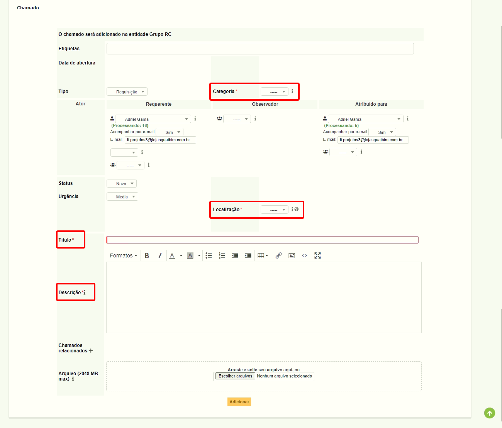
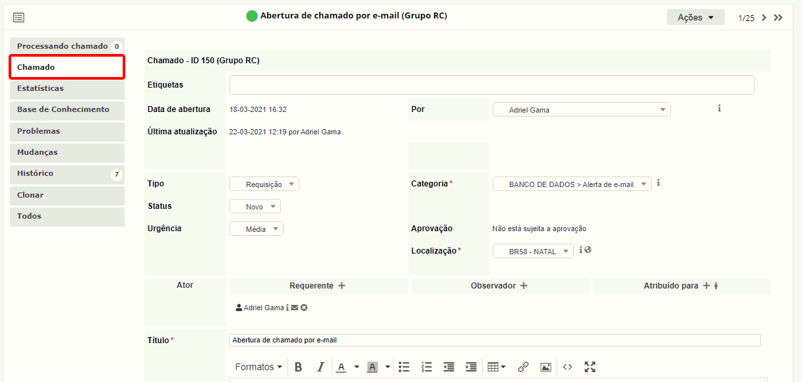
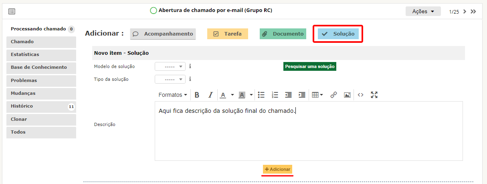
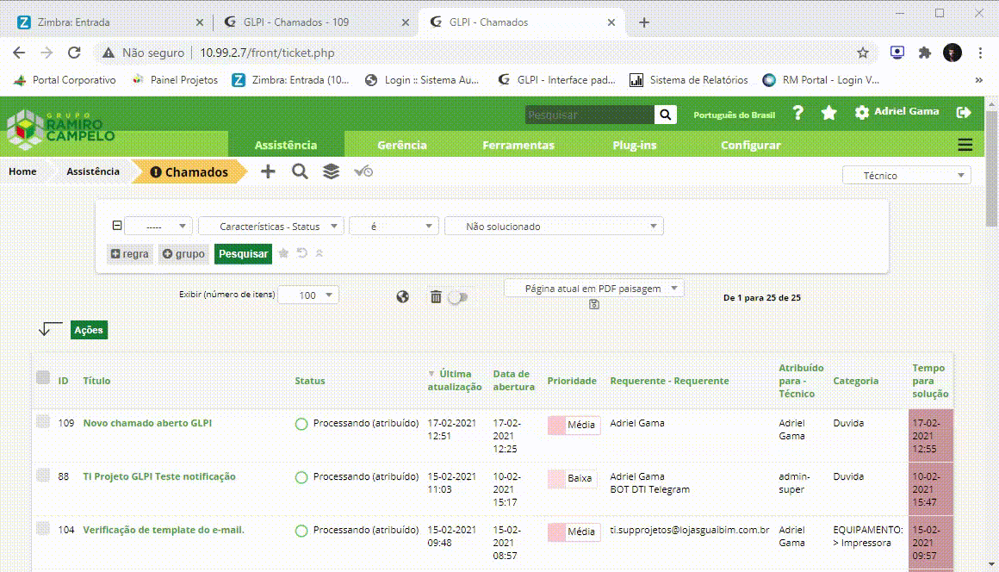

Sobre o GLPI
O GLPI é uma aplicação de gestão de serviços e gerenciamento de ativos 100% web. Foi prioritariamente desenvolvida para atender às necessidades de Gestores de TI no gerenciamento de chamados de Helpdesk e transformou-se numa poderosa plataforma de gerenciamento de ativos e serviços, provendo aos gestores informações “on time” de seus recursos físicos e humanos.
Principais Funcionalidades
- 100% online;
- Sistema de abertura, acompanhamento e notificação de chamados por e-mail;
- Sistema de notificação de abertura e fechamento de chamados pelo Telegram;
- Projeto OpenSource;
- Catálogo de serviços;
- Gestão de níveis de serviço (SLAs e OLAs);
- Assistência ao usuário;
- Relatórios com gráficos;
- Acompanhamento gráfico de chamados;
- Integração com OCS Inventory NG.
Página Inicial
Para fazer o acesso ao GLPI o usuário deverá acessar digitando IP http://10.99.1.19/ em seu navegador.
Login:
Ao fazer o acesso o usuário terá até quatro opções de login:
- Banco de dados interno do GLPI
- GUAIBIM (acesso padrão)
- THOME
- Login por E-mail.
Uso exclusivo do administrador do sistema
Usado por todos os usuários com seu login GEMCO
Usado por todos os usuários com o mesmo login de usuário da máquina
Para quem não possui usuário GEMCO ou THOME.
Início GLPI
Atualmente temos dois exemplos de página inicial, separadas por grupos, sendo eles o grupo Administrativo e Suporte, e o grupo para usuários Padrão, com uma diferença de interface de uso e tópicos para abertura de chamados.
Interface Administrativa e Suporte
A interface administrativa ou de suporte tem um diferencial por já ser mais direta aos chamados criados ou atribuídos ao técnico em questão. Nele também podemos ter um melhor acompanhamento dos chamados, criar novos, efetuar configurações de acordo ao seu nível, gerar relatórios e acompanhar informações por meios de gráficos e um dashboard interativo.
Entidades
As entidades servem para fazer a separação dos setores. Nelas cada setor poderá direcionar chamados que podem ser internamente, ou até mesmo utilizar o grupo geral de chamados para enviar sua solicitação de suporte para DTI.
Para navegar entre as entidades que o usuário tem acesso basta seguir o vídeo abaixo selecionando a entidade destino.

O usuário comum só tem acesso às entidades a qual está cadastrada, os chamados são diferentes em cada uma das entidades e uma não tem acesso à outra.
Ao todo são 13 entidades:
-
GRUPO RC (padrão)
> Entidade geral de abertura de chamados para DTI
-
ASSISTÊNCIA TÉCNICA 1025
Entidade para abertura de chamados internos do setor de Assistência Técnica
-
AUDITORIA
Entidade para abertura de chamados internos do setor de Auditoria
-
DEPTO ADM COMUNICAÇÃO
Entidade para abertura de chamados internos do departamento de Comunicação;
-
DEPTO ADM CRÉDITO
Entidade para abertura de chamados internos do departamento de Crédito;
-
DEPTO DE MKT - JORNAIS DE OFERTAS
Entidade para abertura de chamados internos do departamento de Marketing;
-
DEPTO FINANCEIRO
Entidade para abertura de chamados internos do setor Financeiro;
-
DEPTO OMA - LIBERAÇÕES
Entidade para abertura de chamados internos do setor de Liberações;
-
DTI - MANUTENÇÃO
Entidade para abertura de chamados pelo setor de manutenções DTI;
-
DTI - PLANTÃO
Entidade para abertura de chamados ao DTI nos turnos de plantão aos fins de semana;
-
MALOTES
Entidade para abertura de chamados internos do setor de malotes;
-
SETOR PESSOAL
Entidade para abertura de chamados internos do Setor Pessoal (RH);
-
SETOR PESSOAL(Ponto)
Entidade para abertura de chamados internos do Setor Pessoal (RH);
Chamados
Na interface de chamados observamos diversos tópicos, nos dando a possibilidade de acompanhar chamados em todas as suas fases, desde abertura até o fechamento, utilizando os filtros de pesquisa, que por padrão só mostram chamados ainda não solucionados.
Abertura de chamado
Para criar um novo chamado o técnico deverá acessar o menu
Assistência > Criar chamado, ou utilizar o botão
+ ao lado do nome
Chamados como na imagem abaixo:
Em seguida será direcionado para página em que deve atentar-se aos campos obrigatórios de preenchimento para que a abertura do chamado seja concretizada.

Assim que finalizar abertura do chamado, retornando a tela inicial
em
Assistência.
Para ter acesso a mais informações sobre qualquer chamado, o técnico deverá selecionar clicando no seu Título
Ao acessar o chamado o técnico irá se deparar com a tela a seguir:
Caso apareça a tela da imagem de acompanhamento de chamado, técnico deverá clicar na seção
Chamadodestacado ao lado
Aqui o técnico poderá atribuir o chamado para si ou algum outro usuário, fazer alterações e atualizações na configuração do chamado caso tenha necessidade. Se não houver alterações a fazer, poderá prosseguir para página de acompanhamento do chamado.

O técnico ainda tem a possibilidade de acrescentar um esquema de etiquetas para auxiliar no fluxo e acompanhamento dos chamados na tela principal.
Acompanhamento de chamado
Abaixo a tela de acompanhamento do chamado, que deverá ser utilizada para fazer atualizações pertinentes ao status do atendimento, mantendo informado qualquer técnico, observador ou autor que esteja em acompanhamento, solicitar aprovação de solução para um superior quando necessário, ou aplicar uma solução para o chamado.
Para adicionar um novo acompanhamento ao chamado basta clicar no
botão
Acompanhamento e adicionar sua descrição, após isso
apenas clicar em Adicionar que seu acompanhamento será
enviado, junto com uma notificação para o e-mail do autor, caso este
tenha um e-mail cadastrado em sua conta.
Solução do chamado
Ao clicar em Solução aparecem alguns campos que não precisam ser preenchidos, atentar-se somente
para o campo descrição, pois ele que irá chegar em notificação por e-mail para o usuário que abriu e também
observador acompanhando o chamado.

Aprovação do chamado
Ao enviar o formulário o chamado constará como modo
Solucionado, aguardando que o autor do chamado faça a pesquisa de satisfação.
Caso o requerente não efetue a pesquisa em até 7 dias, ela será automaticamente encerrada por completo.
Após aprovação, o status é alterado para
Fechado e o chamado é encerrado. Caso a aprovação tenha qualquer inconsistência,
o chamado poderá ser reaberto e disponível para refazer todo processo até o fechamento
total do chamado.
Reabrindo chamado
O GLPI também dispõe de reabertura de chamado, que pode ocorrer por uma solução aprovada apresentar falha futura, evitando a abertura de uma nova assistência, o chamado pode ser reaberto e feito novo acompanhamento até sua solução.
Basta o usuário acessar o chamado fechado, ir na aba
Chamado e clicar em Reabrir.
Clonando chamados
Para clonar/duplicar o chamado, basta que o técnico selecione o
chamado desejado, e acessar botão
Ações > Clonar escolha a quantidade de cópias
necessárias para o chamado.

Abertura de chamado por e-mail
Uma das novas funcionalidades é abertura de chamado utilizando o e-mail. Para isso o usuário precisa ter um endereço de e-mail válido cadastrado em nosso sistema, seja ele vinculado ao perfil GUAIBIM ou Login por e-mail.
Basta que o usuário envie um e-mail para
ti.chamados@lojasguaibim.com.br com
Assunto (que será o título do chamado), e
Corpo (que será a descrição).
Preferencialmente todo chamado, seja aberto ou respondido pelo e-mail em forma de acompanhamento, deve ser removido todo o corpo de assinatura, para facilitar o uso da aplicação e também o acompanhamento das notificações que chegarão por e-mail, para não deixar uma aparência poluída.
Importante salientar que o
Assuntonão deve ser modificado, para não perder toda a árvore de acompanhamento do chamado.

Dashboard
O painel de controle é acessado na aba
Plug-ins > Painel.
Nele o técnico tem acesso ao seu histórico de chamados em um determinado período. O histórico é apresentado em formato de gráficos com informações como quantidade de chamados atendidos, chamados atribuídos, tempo de solução dos chamados e até mesmo sua pontuação na pesquisa de satisfação, um painel completo sobre um resumo do técnico.